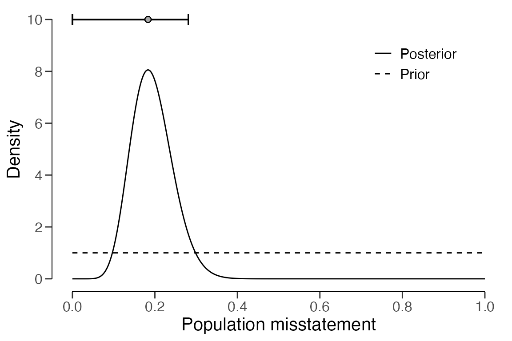

Evaluating audit samples with partial misstatements
Koen Derks
2023-12-07
Source:vignettes/sample-evaluation-partial.Rmd
sample-evaluation-partial.RmdIntroduction
Welcome to the ‘Evaluating audit samples with partial misstatements’
vignette of the jfa package. This page demonstrates how
to efficiently audit samples with partial misstatements using the
evaluation() function in the package.

In auditing, the objective of evaluation is typically 1) to estimate the misstatement in the population based on a sample or 2) to test the misstatement against a critical upper limit, known as performance materiality.
Modeling partial misstatements
Partial misstatements occur when there is only a partial discrepancy between the true value of an item in the sample and its recorded value. From a data perspective, this implies that the misstatements in the sample are not just binary (i.e., 0 or 1) but also often lie between 0 and 1. In practice, this means that the usual methods for evaluating binary misstatements do not suffice.
To illustrate how auditors can adequately deal with this type of
misstatements, we examine a realistic sample from a financial audit
using the allowances data set included in the package. For
clarity, we perform some data pre-processing to arrive at the population
for our example. In this case, the performance materiality (i.e., the
maximum tolerable misstatement) for the population is set to ten
percent.
data("allowances")
population <- allowances
population <- population[population[["bookValue"]] > 0, ]
population <- population[!is.na(population[["auditValue"]]), c(1, 3, 4)]
head(population)## item bookValue auditValue
## 1 1 1600 1600
## 4 4 1250 1250
## 7 7 1150 1150
## 10 10 1250 1250
## 12 12 6700 6700
## 13 13 1450 1450To decide whether the misstatement in the population is lower than the performance materiality of ten percent, a sample of 60 items is selected from the population of 1177 items. In this case, the sample is selected using a fixed interval sampling method in which the items in the population are randomized before selection.
set.seed(21)
sample <- selection(
data = population, size = 60,
method = "interval", units = "values", values = "bookValue",
randomize = TRUE
)$sampleAfter inspecting the items in the sample, each item is annotated with its recorded (i.e., book) value and its true (i.e., audit) value. When evaluating partial misstatements, auditors often calculate the ‘taint’ \(t_i\) of each item \(i\), which is defined as the proportional misstatement in the item:
\[t_i = \frac{\text{Book value}_i - \text{Audit value}_i}{\text{Book value}_i}.\]
For instance, if item \(i\) is booked for $1,000 but has an audit value of $500 it has a taint of \(t_i\) = 0.5. On the other hand, if the item does not contain any misstatement, it has a taint of \(t_i\) = 0. Lastly, if the item is fully misstated (i.e., have a book value of $0), its taint is \(t_i\) = 1.
As is often the case in practice, this audit sample contains many items that are correct (34), some items that are fully misstated (4), and some items that are partially misstated (22). The table below shows the distribution of these misstatements.
sample[["difference"]] <- sample[["bookValue"]] - sample[["auditValue"]]
sample[["taint"]] <- sample[["difference"]] / sample[["bookValue"]]
table(round(sample[["taint"]], 2))##
## 0 0.02 0.1 0.2 0.25 0.33 0.35 0.38 0.5 0.53 0.6 0.75 0.8 1
## 34 1 6 1 3 2 2 1 2 1 1 1 1 4Typically, techniques for evaluating audit samples overlook the prevalence of many zeros in the data. Yet, considering the abundance of zeros while modeling the misstatement in the population can enhance the auditor’s efficiency. In the following sections, we demonstrate several approaches that can be used to deal with partial misstatements and show how they improve the auditor’s efficiency.
Classical approaches
Classical (i.e., frequentist) methods solely look to the data for estimating the parameters in a statistical model via maximum likelihood estimation. This methodology is widely adopted in auditing, and therefore we will discuss it first in this vignette.
Binomial likelihood
The easiest way to analyze partial misstatements is to aggregate them and simply extrapolate the sum of proportional misstatements (i.e., the total taint) to the population. Under the hood, this approach employs a binomial likelihood to estimate the misstatement: k \(\sim\) Binomial(n, \(\theta\)). In this model, \(\theta\) represents the misstatement in the population. This method uses the sum of the taints, denoted as k = \(\sum_{i=0}^n t_i\) as the number of misstatements, together with the sample size n.
While aggregating the taints in this manner may not adhere to a strictly ‘clean’ modeling approach, as the binomial likelihood is only defined for binary data representing complete misstatements, it proves to be effective in estimating the misstatement (Broeze, 2006, Chapter 4.3). Despite its somewhat unconventional nature, the analytical feasibility of this approach makes it easy to use and therefore it is commonly applied in practice.
For the classical binomial likelihood, aggregating the taints can be
done using method = "binomial" in the
evaluation() function. Using maximum likelihood estimation,
\(\theta\) = \(\frac{\sum t}{n}\) = \(\frac{11.003}{60}\) = 0.18338.
eval_binom <- evaluation(
method = "binomial", data = sample, materiality = 0.1,
values = "bookValue", values.audit = "auditValue"
)
print(eval_binom)##
## Classical Audit Sample Evaluation
##
## data: sample
## number of errors = 26, number of samples = 60, taint = 11.003, p-value
## = 0.98545
## alternative hypothesis: true misstatement rate is less than 0.1
## 95 percent confidence interval:
## 0.0000000 0.2852153
## most likely estimate:
## 0.18338
## results obtained via method 'binomial'As shown in the output, the most likely misstatement is estimated to be 18.34 percent, with a 95 percent upper bound of 28.52 percent. Note that this approach might be effective (i.e., estimate the misstatement well) but not not very efficient (i.e., has a relatively high upper bound). That is because it does not take into account the information in the distribution of the taints.
Stringer bound
The Stringer bound is a frequentist method to improve efficiency by taking into account the differences between the magnitude of the taints (Bickel, 1992; Stringer, 1963). The bound is a variant of the binomial distribution, but considers the non-binary nature of the taints. The Stringer upper bound on the population misstatement is given by \(p(0, 1 - \alpha)\) + \(\sum_{i=1}^k [p(i, 1 - \alpha) - p(i - 1, 1 - \alpha)] \cdot t_i\). In this formula, \(p(i; 1 - \alpha)\) is the 1 - \(\alpha\) upper limit for at most \(i\) misstatements in n items according to the binomial distribution (Clopper & Pearson, 1934). This is equal to the 1 - \(\alpha\) percentile of a beta(1 + i, n - i) distribution (Pearson, 1948). When calculating the Stringer bound, the taints are placed in descending order in the formula as a form of conservatism.
In jfa, the Stringer bound can be applied using
method = "stringer" in the evaluation()
function. The maximum likelihood estimate for the Stringer bound is the
same as that of the binomial likelihood.
eval_stringer <- evaluation(
method = "stringer", data = sample, materiality = 0.1,
values = "bookValue", values.audit = "auditValue"
)
print(eval_stringer)##
## Classical Audit Sample Evaluation
##
## data: sample
## number of errors = 26, number of samples = 60, taint = 11.003
## 95 percent confidence interval:
## 0.0000000 0.2799705
## most likely estimate:
## 0.18338
## results obtained via method 'stringer.binomial'As shown in the output, the most likely misstatement is estimated to be 18.34 percent, with a 95 percent upper bound of 27.99 percent. Since the upper bound of the Stringer method is (slightly) lower than that of the binomial likelihood, the Stringer bound is more efficient.
Hurdle beta model
Efficiency can be further improved by explicitly modeling the probability of a taint being zero (i.e., zero-inflation). This is a more realistic method because, in practice, most taints are zero. More formally, if there are explicit zeros present in the data, a model that incorporates a separate probability of being zero should be unequivocally favored over a model that does not. That is because the probability mass associated with the zeros in the adjusted model are infinitely larger than their probability densities under the traditional model.
In jfa, there are two types of models that incorporate a probability of the taint being zero. These are the zero-inflated Poisson model and the hurdle beta model. In the zero-inflated Poisson model, the idea is to incorporate extra zeros into the zeros already present in the Poisson distribution. However, this idea does not directly apply to a “zero-inflated beta” model. Since the beta likelihood cannot accommodate zeros, there are no zeros to inflate. A more appropriate name for this model is therefore a hurdle (i.e., two-component) beta model. This terminology reflects the idea that the model has to overcome the hurdle of zero values which are not inherently part of the beta likelihood.
The formal specification of the hurdle beta model is given below. Here, \(p_{(0, 1]}\) is the probability of a misstatement occurring, regardless of its size. Additionally, \(p_{1 | (0, 1]}\) is the conditional probability of a misstatement being a full misstatement. Furthermore, \(\phi\) is the average (non-zero-one) taint and \(\nu\) is the concentration of these taints. The total misstatement in the population is \(\theta\) = \(p_{(0, 1)}\) \(\cdot\) \(\phi\) + \(p_{1}\).
\[\begin{align*} t = \begin{cases} 0 & \text{with probability } p_{0} = 1 - p_{(0, 1]} \\ \left(0, 1\right] & \begin{cases} \text{Beta}(\phi \nu, (1 - \phi) \nu) & \text{with probability } p_{(0, 1)} = p_{(0, 1]} \cdot (1 - p_{1 | (0, 1]}) \\ 1 & \text{with probability } p_{1} = p_{(0, 1]} \cdot p_{1 | (0, 1]} \end{cases} \end{cases} \end{align*}\]
In jfa, this hurdle beta model can be fitted using
method = "hurdle.beta" in the evaluation()
function. To estimate the parameters in this model using the maximum
likelihood, we use the default option prior = FALSE. Using
maximum likelihood estimation, \(p_{(0,
1]}\) = \(\frac{n_t}{n}\) =
\(\frac{26}{60}\) = 0.433, where \(n_t\) is the number of misstatements, and
\(p_{1 | (0, 1]}\) = \(\frac{n_1}{n_t}\) = \(\frac{4}{26}\) = 0.1539, where \(n_1\) is the number of full misstatements.
Furthermore, \(\phi\) = \(\frac{\sum t - n_1}{n_t - n_1}\) = \(\frac{11.003 - 4}{26 - 4}\) = 0.3183.
Hence, the most likely misstatement is estimated to be \(\theta\) = (\(p_{(0, 1]}\) \(\cdot\) \((1-p_{1
| (0, 1]})\) \(\cdot\) \(\phi\)) + (\(p_{(0, 1]}\) \(\cdot\) \(p_{1 |
(0, 1]}\)) = (0.433 \(\cdot\) (1
- 0.1539) \(\cdot\) 0.3183) + (0.433
\(\cdot\) 0.1539) = 0.18338. The upper
bound cannot be derived analytically and has to be determined by drawing
samples from the fitted model. Hence, it is recommended to call
set.seed() before executing the following command to make
the results reproducible.
set.seed(1)
eval_hurdle <- evaluation(
method = "hurdle.beta", data = sample, materiality = 0.1,
values = "bookValue", values.audit = "auditValue"
)
print(eval_hurdle)##
## Classical Audit Sample Evaluation
##
## data: sample
## number of errors = 26, number of samples = 60, taint = 11.003
## alternative hypothesis: true misstatement rate is less than 0.1
## 95 percent confidence interval:
## 0.0000000 0.2628182
## most likely estimate:
## 0.18338
## results obtained via method 'hurdle.beta'As shown in the output, the most likely misstatement is estimated to be 18.34 percent, with a 95 percent upper bound of around 26.28 percent. Since the upper bound of the hurdle beta model is (slightly) lower than that of the Stringer bound, the hurdle beta model is more efficient.
We leave it to the interested reader to apply the zero-inflated
Poisson model to the data from this sample using
method = "inflated.poisson". Please note that this requires
specification of the number of items in the population
(N.items) and the number of monetary units in the
population (N.units).
Bayesian approaches
In the Bayesian framework, the auditor defines a prior distribution for the parameters in the model. This approach offers a notable advantage for models dealing with partial misstatement, as the prior distribution has a regularizing effect, reducing the amount of data required for reliable inferences. More specifically, frequentist models cannot be optimized when there are no non-zero taints in the sample. Additionally, the prior distribution enables auditors to integrate pre-existing information about the misstatement into the statistical analysis, thereby increasing efficiency when the auditor has pre-existing information about the misstatement.
Beta distribution
The prior distribution we typically assign in the binomial model is
the beta distribution. Just as we handle taints in the binomial
likelihood, they can also be aggregated given the prior distribution.
The statistical model is k \(\sim\) Binomial(n, \(\theta\)) and the prior distribution that
is used is \(\theta\) \(\sim\) Beta(\(\alpha\), \(\beta\)). Given the data n and
k = \(\sum t\), the posterior
distribution for the default beta(1, 1) prior distribution
(prior = TRUE) can be derived analytically and is \(\theta\) \(\sim\) Beta(\(\alpha\) = 1 + \(\sum t\), \(\beta\) = 1 + n - \(\sum t\)).
For the binomial likelihood, this Bayesian model can be applied in
the evaluation() function using
method = "binomial" in comination with
prior = TRUE. However, the input for the prior
argument can also be an object created by the auditPrior()
function.
eval_beta <- evaluation(
method = "binomial", data = sample, materiality = 0.1,
values = "bookValue", values.audit = "auditValue", prior = TRUE
)
print(eval_beta)##
## Bayesian Audit Sample Evaluation
##
## data: sample
## number of errors = 26, number of samples = 60, taint = 11.003, BF₁₀ =
## 0.15107
## alternative hypothesis: true misstatement rate is less than 0.1
## 95 percent credible interval:
## 0.0000000 0.2808365
## most likely estimate:
## 0.18338
## results obtained via method 'binomial' + 'prior'As shown in the output, the most likely misstatement is estimated to
be 18.34 percent, with a 95 percent upper bound of 28.1 percent. The
prior and posterior distribution can be visualized via the
plot(..., type = "posterior") command.
plot(eval_beta, type = "posterior")
Hurdle beta model
It is also possible to fit a Bayesian variant of the hurdle beta model. This entails applying prior distributions for the parameters \(p\), \(\phi\), and \(\nu\). The prior distributions used by jfa for the Bayesian hurdle beta model are \(p_{(0, 1]}\) \(\sim\) Beta(\(\alpha\), \(\beta\)) (to be specified by the user), \(p_{1 | (0, 1]}\) \(\sim\) Beta(1, 1), \(\phi\) \(\sim\) Beta(1, 1), and \(\nu\) \(\sim\) Pareto(1, \(\frac{3}{2}\)).
This Bayesian hurdle beta model can be applied using
method = "hurdle.beta" in combination with
prior = TRUE (or an object created by the
auditPrior() function) in the evaluation()
function. In this case, the posterior distribution cannot be determined
analytically and must be determined using MCMC sampling, which is why it
is recommended to call set.seed() before computing the
results.
set.seed(2)
eval_hurdle_bayes <- evaluation(
method = "hurdle.beta", data = sample, materiality = 0.1,
values = "bookValue", values.audit = "auditValue", prior = TRUE
)
print(eval_hurdle_bayes)##
## Bayesian Audit Sample Evaluation
##
## data: sample
## number of errors = 26, number of samples = 60, taint = 11.003, BF₁₀ =
## 0.0068887
## alternative hypothesis: true misstatement rate is less than 0.1
## 95 percent credible interval:
## 0.0000000 0.2640163
## most likely estimate:
## 0.1935
## results obtained via method 'hurdle.beta' + 'prior'As shown in the output, the most likely misstatement is estimated to
be 19.35 percent, with a 95 percent upper bound of around 26.4 percent.
The prior and posterior distribution can be visualized using the
plot() function.
plot(eval_hurdle_bayes, type = "posterior")